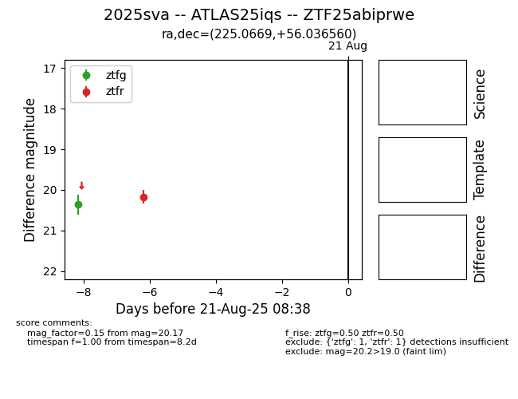

Target 2025sva at 2025-08-22 17:16, see:
FINK: fink-portal.org/ZTF25abiprwe
Lasair: lasair-ztf.lsst.ac.uk/objects/ZTF25abiprwe
ALeRCE: alerce.online/object/ZTF25abiprwe
TNS: wis-tns.org/object/2025sva
YSE: ziggy.ucolick.org/yse/transient_detail/2025sva
alt names
ZTF25abiprwe (ztf,alerce)
2025sva (tns,yse)
ATLAS25iqs (atlas)
coordinates:
equatorial (ra, dec) = (225.0669,+56.03656)
galactic (l, b) = (93.2593,+53.02393)
photometry
last ztfg=20.36, ztfr=20.17
1 ztfg, 1 ztfr detections
